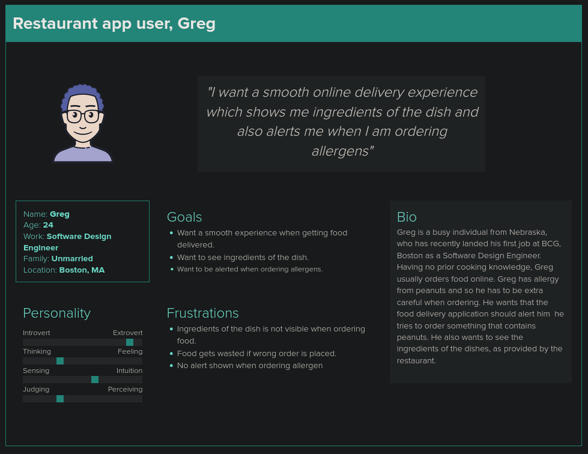
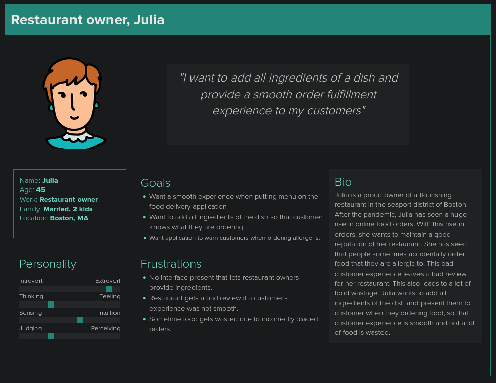

User class - Restaurant app user
Following are the conclusions drawn from restaurant app user class- One of the main concern of restaurant app user is that if he orders allergic food by accident, there is no warning given.
- Many user, in their busy lifestyle, accidentally add dish to the cart which contains certain ingredients that they are allergic to.
- If user eats this dish, it could lead to food allergy. If they don't eat it then it causes food wastage.
- Another major concern is that user is not shown all the ingredients of the dish in the application.
- If user is shown ingredients then it help user in better judging what to order and what to not.

User class - Restaurant owner
Following are the conclusions drawn from restaurant owner class- One of the main concern of restaurant owner is that sometimes customers accidentally order allergens.
- Accidentally ordering allergic food may lead to bad customer experience, and leave a bad review for restaurant.
- If customer refuses to accept accidentally placed order then it causes food wastage.
- Another major concern is that restaurant owner can not add all ingredients of the dish in application.
- If customer is shown ingredients then it will help in preventing accidentally placed allergic orders.